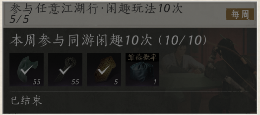
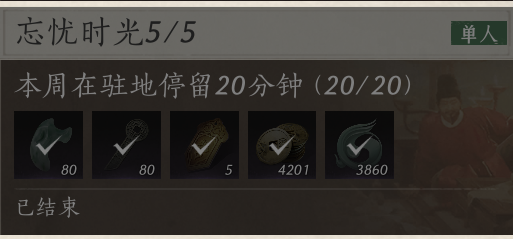
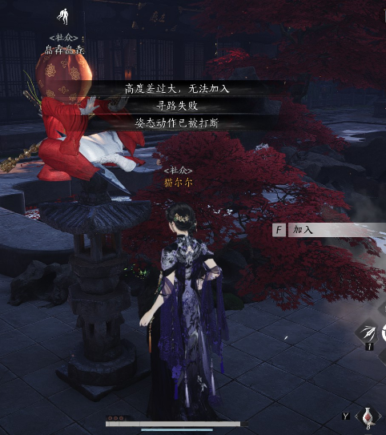
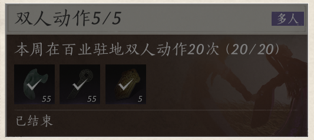
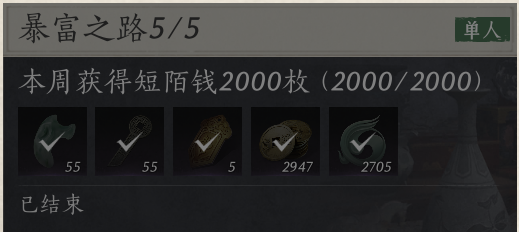

Guild Weekly Active Points and Wonder Jade Guide
Thanks to @夜 from 镜花阙 on the Where Winds Meet Global Server for this guide.
The main reason to join a guild is to earn Wonder Jade and unlock guild bonuses. New players can use this guide to earn it quickly. All guild activities reset weekly, and there is no weekly cap on Wonder Jade, so the more you do, the more you earn. The easiest activities are listed first. Start at the top to earn activity points and Wonder Jade quickly.
Guild Transporter
Submit three rounds of materials to Wen Wushuang in the middle room of the guild base. If you are missing something, click its icon to buy it directly from the shop, or ask for help. You also get 10 activity points each time you submit materials for someone else.

Wandering Paths – Leisure Mode
Find a Landmark on the map, go there, and take ten photos. You do not need to submit or save them. Alternatively, while at a party or idling in co-op, press F2 and choose the Dual Cultivation pose. It takes about ten minutes to complete.

Guild Carefree Moments
Spend 20 minutes at the guild base. You can do this by staying AFK at the Guild Party. Select Guild Party to see when it starts.


Two-player Pose
At the guild base, have one player stand on a raised spot, such as a lamppost, then press F2 and choose Dual Cultivation. Have the second player press F to interact. The height difference causes pathfinding to fail. Twenty failed interactions complete the task. If both players need credit, swap roles and repeat. You can find a partner during the party. The screenshot below shows how to position yourselves.


Showdown
Available twice a week. You can fight the boss or select Spectate in the upper-right corner. Watch one complete fight before leaving to get credit.

Guild Arena
Available twice a week. You can compete or select Spectate in the upper-right corner. Watch one complete match before leaving to get credit.

Co-op Exploration
Spend 20 minutes in co-op each week to complete the task. If you need a partner, ask in guild chat.

Road to Riches
There are several ways to finish this task. (1) Buy 1,000 Commerce Coin from the Season Shop. (2) Enter the weekly ranked Cricket Arena at the Kaifeng Imperial Palace. (3) Trade through the Kaifeng Trade Commission. For instructions, see the Where Winds Meet trading guide on 17173 (the guide uses Beijing time).
